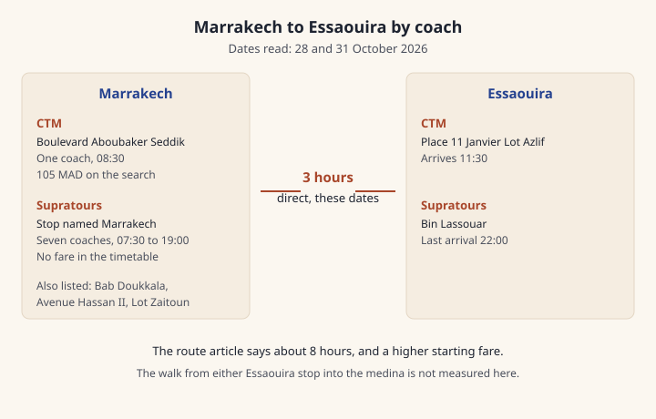

Marrakech to Essaouira by coach
Two coach companies cover Marrakech to Essaouira. What their own searches showed on two dates in October 2026, which stop each one names, and what the ticket rules say about luggage and children.
On 28 October 2026 Source-checked 27 Oct 2026 Sources and 31 October 2026 Source-checked 27 Oct 2026 Sources, Supratours listed 7 direct coaches Source-checked 27 Oct 2026 Sources, each 3 hours Source-checked 27 Oct 2026 Sources, the first at 07:30 Source-checked 27 Oct 2026 Sources and the last at 19:00 Source-checked 27 Oct 2026 Sources. That timetable did not print a fare.
CTM's booking search on the same two dates showed 1 coach Source-checked 27 Oct 2026 Sources, leaving 08:30 Source-checked 27 Oct 2026 Sources, arriving 11:30 Source-checked 27 Oct 2026 Sources, at 105 MAD Source-checked 27 Oct 2026 Sources, also 3 hours Source-checked 27 Oct 2026 Sources and direct Source-checked 27 Oct 2026 Sources.
CTM's route article prints a different picture: about 8 hours Sources disagree Sources, a fare from 205 MAD Sources disagree Sources in the text and from 225 MAD Sources disagree Sources in the summary box, and about 5 departures Sources disagree Sources. Search the date you will travel, and pay the price that search shows.
A hold bag on CTM is a separate payment, from 5 MAD Source-checked 27 Oct 2026 Sources, with each bag at or under 20 kg Source-checked 27 Oct 2026 Sources. With a bag for the hold, be at the stop 30 minutes Source-checked 27 Oct 2026 Sources before the coach leaves.
CTM's Essaouira stop is Place 11 Janvier Lot Azlif Source-checked 27 Oct 2026 Sources. The Supratours agency address there is Bin Lassouar Source-checked 27 Oct 2026 Sources. The walk from either stop into the medina is not measured on this page. For the ride to a Marrakech stop, use Petit taxis in Marrakech.
Last updated 27 Oct 2026.
Written by Omar Oujoud in Casablanca. Research drafting is AI-assisted; observations are recorded in person. How we check
Jump to what’s still being checked · sources
How we checked
CTM's booking pages are in French. The English path on ctm.ma opens a loyalty-club article, so there was no English timetable to set beside the French search. The adult search was read for Wednesday 28 October 2026 Source-checked 27 Oct 2026 Sources and Saturday 31 October 2026 Source-checked 27 Oct 2026 Sources. Each date returned 1 coach Source-checked 27 Oct 2026 Sources, class Confort Source-checked 27 Oct 2026 Sources, direct Source-checked 27 Oct 2026 Sources, 3 hours Source-checked 27 Oct 2026 Sources, 105 MAD Source-checked 27 Oct 2026 Sources, leaving 08:30 Source-checked 27 Oct 2026 Sources and arriving 11:30 Source-checked 27 Oct 2026 Sources. The booking stop in Marrakech is Boulevard Aboubaker Seddik Source-checked 27 Oct 2026 Sources. The agency list adds the corner with Zineb Nefzaouia Source-checked 27 Oct 2026 Sources. The Essaouira stop is Place 11 Janvier Lot Azlif Source-checked 27 Oct 2026 Sources. Both stops are marked wheelchair accessible Source-checked 27 Oct 2026 Sources. The journey does not say whether a wheelchair space is on the coach Source-checked 27 Oct 2026 Sources. The coach is listed with air conditioning, a luggage service and the motorway Source-checked 27 Oct 2026 Sources. Seat counts differed between the two dates, so this page does not print a seat count. The search object also carries refund and change flags. The sale conditions describe a narrower refund rule, so those flags are not used as the refund rule. The booking search for these dates did not ask for a movement paper Source-checked 27 Oct 2026 Sources.
The route article is French, and its own date says it was last changed on 27 February 2025 Sources disagree Sources. The summary box prints 8 hours Sources disagree Sources, +5 departures Sources disagree Sources, 191 km Sources disagree Sources, a first departure and a last departure both at 09:00 Sources disagree Sources, and a fare from 225 MAD Sources disagree Sources. The article text says about 5 daily trips Sources disagree Sources, about 8 hours Sources disagree Sources, about 190 km Sources disagree Sources, and a one-way fare from 205 MAD Sources disagree Sources. Those figures disagree with the booking search read the same day, and the box disagrees with the text. The article still includes a pandemic-era sentence about a movement paper Sources disagree Sources.
Supratours' timetable page rendered in French. No separate English page was found. The station records carry English names that match the French for these two cities. The class searched is Normal coach Source-checked 27 Oct 2026 Sources in English and Normale autocar Source-checked 27 Oct 2026 Sources in French. On both dates the normal-coach list had 7 direct coaches Source-checked 27 Oct 2026 Sources, each 3 hours Source-checked 27 Oct 2026 Sources, from 07:30 Source-checked 27 Oct 2026 Sources to 19:00 Source-checked 27 Oct 2026 Sources. The journey objects contained no price. The hours on this page are the hours the site shows. This page does not add an hour for a time zone. Other comfort classes were not fully read, so they are not listed here.
The homepage panel that says from 100 MAD Source-checked 27 Oct 2026 Sources is the other direction Source-checked 27 Oct 2026 Sources and a starting price, not a dated ticket Source-checked 27 Oct 2026 Sources. The footer does not name Essaouira Source-checked 27 Oct 2026 Sources. It describes coaches that continue to towns the train does not serve. This page does not say whether a train reaches Essaouira.
The regional council's transport page was read in English and in French. Both languages name CTM and Supratours for Essaouira Source-checked 27 Oct 2026 Sources. The council spells Supratours with an @ sign. Both languages place the coach station at Bab Doukkala Source-checked 27 Oct 2026 Sources. Both languages say tickets are sold inside the station Source-checked 27 Oct 2026 Sources. They print no fare and no journey time Source-checked 27 Oct 2026 Sources. They also name Safi, Agadir and Ouarzazate on that same line. The national tourist-office site did not open past its security check, so it is not a source here.
Supratours' conditions are in French. No English version was found. On a coach, the full fare starts at age 4 Source-checked 27 Oct 2026 Sources. The under-4 free rule is written in the train paragraph and is not stated for coaches Source-checked 27 Oct 2026 Sources. At a check, the named passenger shows a passport or a national identity card Source-checked 27 Oct 2026 Sources. an e-ticket can stay on the phone or be printed Source-checked 27 Oct 2026 Sources. The coach row of the refund table is labelled Autocar Flex: the full price up to 24 hours Source-checked 27 Oct 2026 Sources before departure, and 80% Source-checked 27 Oct 2026 Sources of the ticket price inside that last day. The table does not describe a coach ticket that is not Flex. Ticket questions on that page go to 2255 Source-checked 27 Oct 2026 Sources, which the page describes as a local-rate call. The conditions page does not print a luggage price or a bag size.
CTM's sale conditions and questions page are both French. A child under age 4 Source-checked 27 Oct 2026 Sources travels free on a lap, one child per adult Source-checked 27 Oct 2026 Sources. From that age the child pays the full fare. Printing is not necessary Source-checked 27 Oct 2026 Sources. A change is possible up to 2 times Source-checked 27 Oct 2026 Sources, at least 12 hours Source-checked 27 Oct 2026 Sources before departure. Without Flex the change fee is 10 MAD Source-checked 27 Oct 2026 Sources. Flex costs 5% Source-checked 27 Oct 2026 Sources of the ticket, at least 10 MAD Source-checked 27 Oct 2026 Sources, and then those changes are free. The questions page says CTM tickets are not refundable. The sale conditions say a ticket without Flex is not refundable, and a Flex ticket can become a voucher on the scale in the edge case below. With nothing declared for a hold bag, both pages cap compensation at 100 MAD Source-checked 27 Oct 2026 Sources. The ceiling you may declare is 2000 MAD Sources disagree Sources in the sale conditions and 5000 MAD Sources disagree Sources on the questions page.
Nothing on this page was seen on a visit.

At a glance
Two companies, two doors, and a journey time you should read on the date you travel. Supratours had the fuller daytime list and no fare in the timetable. CTM's booking search had one morning coach and a price. CTM's route article prints other hours and other prices.
| Detail | Supratours timetable | CTM booking search | CTM route article |
|---|---|---|---|
| Dates read | 28 October 2026 Source-checked 27 Oct 2026 Sources and 31 October 2026 Source-checked 27 Oct 2026 Sources | 28 October 2026 Source-checked 27 Oct 2026 Sources and 31 October 2026 Source-checked 27 Oct 2026 Sources | page date 27 February 2025 Sources disagree Sources |
| Departures | 7 direct coaches Source-checked 27 Oct 2026 Sources | 1 coach Source-checked 27 Oct 2026 Sources, direct Source-checked 27 Oct 2026 Sources | about 5 departures Sources disagree Sources, and the box prints +5 departures Sources disagree Sources, first and last both 09:00 Sources disagree Sources |
| Journey time | 3 hours Source-checked 27 Oct 2026 Sources | 3 hours Source-checked 27 Oct 2026 Sources | 8 hours Sources disagree Sources |
| Fare | Not yet confirmed | 105 MAD Source-checked 27 Oct 2026 Sources, class Confort Source-checked 27 Oct 2026 Sources | from 205 MAD Sources disagree Sources in the text, from 225 MAD Sources disagree Sources in the box |
| Marrakech door | The stop is named Marrakech and prints no street Source-checked 27 Oct 2026 Sources. Counters are also listed at Bab Doukkala Source-checked 27 Oct 2026 Sources, Avenue Hassan II Source-checked 27 Oct 2026 Sources, and number 2, Lot Zaitoun, Amerchiche Source-checked 27 Oct 2026 Sources | Boulevard Aboubaker Seddik Source-checked 27 Oct 2026 Sources, corner Zineb Nefzaouia Source-checked 27 Oct 2026 Sources | the article does not name a street |
| Essaouira door | Bin Lassouar Source-checked 27 Oct 2026 Sources | Place 11 Janvier Lot Azlif Source-checked 27 Oct 2026 Sources | the article does not name a street |
| After dark | last leaves 19:00 Source-checked 27 Oct 2026 Sources, arrives 22:00 Source-checked 27 Oct 2026 Sources | the coach leaves 08:30 Source-checked 27 Oct 2026 Sources | first and last both 09:00 Sources disagree Sources |
| Hold bag | Not yet confirmed | from 5 MAD Source-checked 27 Oct 2026 Sources, up to 20 kg Source-checked 27 Oct 2026 Sources | Not yet confirmed |
Step by step
Our advice: search your own date on the company's own site, and go to the stop that search names. Keep the route article as the page that disagrees, and pay the price the search shows for that date.
- Open the operator's own search. The Supratours timetable is on supratours.ma. The CTM booking search is on booking.ctm.ma. The route article on ctm.ma is the page with the longer journey and the higher starting prices.
- On Supratours, the class read here is Normal coach Source-checked 27 Oct 2026 Sources (Normale autocar Source-checked 27 Oct 2026 Sources in French). The seven coaches on these dates were 07:30 Source-checked 27 Oct 2026 Sources to 10:30 Source-checked 27 Oct 2026 Sources, 09:00 Source-checked 27 Oct 2026 Sources to 12:00 Source-checked 27 Oct 2026 Sources, 10:30 Source-checked 27 Oct 2026 Sources to 13:30 Source-checked 27 Oct 2026 Sources, 12:00 Source-checked 27 Oct 2026 Sources to 15:00 Source-checked 27 Oct 2026 Sources, 15:00 Source-checked 27 Oct 2026 Sources to 18:00 Source-checked 27 Oct 2026 Sources, 17:00 Source-checked 27 Oct 2026 Sources to 20:00 Source-checked 27 Oct 2026 Sources, and 19:00 Source-checked 27 Oct 2026 Sources to 22:00 Source-checked 27 Oct 2026 Sources.
- Buy the ticket in the name of the person who will ride. Supratours asks that person to show a passport or a national identity card Source-checked 27 Oct 2026 Sources, and an e-ticket can stay on the phone or be printed Source-checked 27 Oct 2026 Sources. On CTM, Printing is not necessary Source-checked 27 Oct 2026 Sources. CTM's conditions do not say a passport is accepted. Ask before you rely on one.
- For a CTM hold bag, pay at the agency when you buy the ticket, or 30 minutes Source-checked 27 Oct 2026 Sources before departure. You may check 2 bags Source-checked 27 Oct 2026 Sources. Each stays at or under 20 kg Source-checked 27 Oct 2026 Sources, and the three sides added together stay at or under 170 cm Source-checked 27 Oct 2026 Sources. A bag you keep with you stays within 40×50×16 cm Source-checked 27 Oct 2026 Sources. Hold bags are handed over at the coach, at boarding Source-checked 27 Oct 2026 Sources. With no bag for the hold, arrive at least 15 minutes Source-checked 27 Oct 2026 Sources before departure. With bags, arrive at least 30 minutes Source-checked 27 Oct 2026 Sources before. Supratours' conditions page does not print a bag price or a bag size.
- On CTM, sit in the numbered seat Source-checked 27 Oct 2026 Sources. Smoking is forbidden Source-checked 27 Oct 2026 Sources. Animals are forbidden in the hold and on the coach Source-checked 27 Oct 2026 Sources.
- In Marrakech, go to the door your ticket names. CTM: Boulevard Aboubaker Seddik Source-checked 27 Oct 2026 Sources, at the corner the agency list calls Zineb Nefzaouia Source-checked 27 Oct 2026 Sources. The council, in English and in French, Both languages place the coach station at Bab Doukkala Source-checked 27 Oct 2026 Sources and Both languages say tickets are sold inside the station Source-checked 27 Oct 2026 Sources. Supratours lists a counter at Bab Doukkala Source-checked 27 Oct 2026 Sources on Avenue Mly El Hassan Bel Mahdi Source-checked 27 Oct 2026 Sources, one at Avenue Hassan II Source-checked 27 Oct 2026 Sources by the train station, and one at number 2, Lot Zaitoun, Amerchiche Source-checked 27 Oct 2026 Sources. The timetable stop itself is named Marrakech and prints no street Source-checked 27 Oct 2026 Sources.
- In Essaouira, CTM stops at Place 11 Janvier Lot Azlif Source-checked 27 Oct 2026 Sources. Supratours' agency is at Bin Lassouar Source-checked 27 Oct 2026 Sources, and the Essaouira agency and the Essaouira station share the same coordinates on the operator's list Source-checked 27 Oct 2026 Sources. The minutes on foot to the medina are not printed. A petit taxi in Marrakech is Petit taxis in Marrakech. An app, when a car is offered, is Uber and ride apps in Marrakech. From the airport, start with Marrakech airport to the medina. Dirham notes are in Cash and ATMs at Marrakech airport. The fare log has no coach row yet. The city page is Your first Marrakech trip.
Phrases, if you need them:
- Un billet Marrakech–Essaouira, s'il vous plaît. One ticket, Marrakech to Essaouira, please.
- Quel arrêt, s'il vous plaît? Which stop, please?
- تذكرة إلى الصويرة، من فضلك. A ticket to Essaouira, please.
The edge case
The evening. On the two dates read, the CTM coach left at 08:30 Source-checked 27 Oct 2026 Sources. The last Supratours coach left at 19:00 Source-checked 27 Oct 2026 Sources and arrived at 22:00 Source-checked 27 Oct 2026 Sources. A later date was not searched. If you land at Menara after the last coach you can still catch, start with Marrakech airport to the medina, and search this road again for the next departure.
A child. On a Supratours coach the full fare starts at age 4 Source-checked 27 Oct 2026 Sources. The under-4 free rule is written in the train paragraph and is not stated for coaches Source-checked 27 Oct 2026 Sources. On CTM, a child under age 4 Source-checked 27 Oct 2026 Sources travels free when held on an adult's lap, one child per adult Source-checked 27 Oct 2026 Sources. From that age the child pays the full fare.
A change of plan. CTM allows up to 2 changes Source-checked 27 Oct 2026 Sources, asked at least 12 hours Source-checked 27 Oct 2026 Sources before departure. Without Flex the fee is 10 MAD Source-checked 27 Oct 2026 Sources. Flex costs 5% Source-checked 27 Oct 2026 Sources of the ticket, at least 10 MAD Source-checked 27 Oct 2026 Sources, and then those changes are free. A refund is the open point. The questions page says the tickets are not refundable. The sale conditions say a ticket without Flex is not refundable, and a Flex ticket can become a voucher: the full ticket price Sources disagree Sources when you ask more than 24 hours Sources disagree Sources ahead, 85% Sources disagree Sources between 12 hours Sources disagree Sources and 24 hours Sources disagree Sources, and nothing in the last 12 hours Sources disagree Sources. Supratours prints a coach refund only on the row called Autocar Flex: the full price up to 24 hours Source-checked 27 Oct 2026 Sources before departure, and 80% Source-checked 27 Oct 2026 Sources of the ticket price after that. On that same Flex row, exchanges are unlimited free exchanges before departure, subject to seats Source-checked 27 Oct 2026 Sources.
A lost CTM bag. With no value declared, both pages cap what they pay at 100 MAD Source-checked 27 Oct 2026 Sources. The ceiling you may declare is 2000 MAD Sources disagree Sources in the sale conditions and 5000 MAD Sources disagree Sources on the questions page.
Ramadan is not mentioned on these pages. A day with no coach is not mentioned either. Search the date.
Our advice: read the refund line on the ticket you are about to buy, before you add Flex. If the two CTM pages still disagree, ask which rule applies to the ticket in front of you.
What to watch for
Our advice: the price on the search for your date is the price to pay. A higher figure on the route article is a different page.
- Two companies, two doors. CTM names Boulevard Aboubaker Seddik Source-checked 27 Oct 2026 Sources. Both languages place the coach station at Bab Doukkala Source-checked 27 Oct 2026 Sources. Supratours lists three counters, and a timetable stop with no street. Go to the name on your ticket.
- The article and the search. The article says about 8 hours Sources disagree Sources and fares from 205 MAD Sources disagree Sources and 225 MAD Sources disagree Sources. The search on these dates said 3 hours Source-checked 27 Oct 2026 Sources and 105 MAD Source-checked 27 Oct 2026 Sources. The article's own box also says the road is 191 km Sources disagree Sources, while the text says about 190 km Sources disagree Sources.
- The hold bag is separate. 105 MAD Source-checked 27 Oct 2026 Sources does not include it. The questions page starts a bag at 5 MAD Source-checked 27 Oct 2026 Sources.
- The seat number. On CTM, sit in the numbered seat Source-checked 27 Oct 2026 Sources.
- Children. Full fare from age 4 Source-checked 27 Oct 2026 Sources on CTM once the child is not on a lap, and from age 4 Source-checked 27 Oct 2026 Sources on a Supratours coach.
- The homepage price. 100 MAD Source-checked 27 Oct 2026 Sources on the Supratours homepage is a starting price, not a dated ticket Source-checked 27 Oct 2026 Sources and it is the other direction Source-checked 27 Oct 2026 Sources.
- Wheelchair. Both stops are marked wheelchair accessible Source-checked 27 Oct 2026 Sources. The journey does not say whether a wheelchair space is on the coach Source-checked 27 Oct 2026 Sources.
- After dark. The last Supratours departure on these dates is 19:00 Source-checked 27 Oct 2026 Sources, with arrival at 22:00 Source-checked 27 Oct 2026 Sources. CTM's coach on these dates leaves at 08:30 Source-checked 27 Oct 2026 Sources.
- The fare log. The fare log has no row for this road. A price named at the stop is not recorded here.
Still being checked
Not yet confirmed, so not stated as fact on this page:
- Whether the CTM route article's 8 hours Sources disagree Sources, its fares from 205 MAD Sources disagree Sources and 225 MAD Sources disagree Sources, and its count of about 5 departures Sources disagree Sources match any date the booking search will show. The box also prints +5 departures Sources disagree Sources and sets first and last at the same 09:00 Sources disagree Sources.
- Whether a CTM ticket can be refunded. The questions page says the tickets are not refundable. The sale conditions describe a Flex voucher: the full ticket price Sources disagree Sources more than 24 hours Sources disagree Sources before departure, 85% Sources disagree Sources between 12 hours Sources disagree Sources and 24 hours Sources disagree Sources, and nothing in the last 12 hours Sources disagree Sources.
- Whether the value you may declare for a CTM hold bag is 2000 MAD Sources disagree Sources or 5000 MAD Sources disagree Sources. With nothing declared, both pages cap compensation at 100 MAD Source-checked 27 Oct 2026 Sources.
- What a Supratours ticket costs from Marrakech to Essaouira on a named date. The timetable had no price. The homepage figure of 100 MAD Source-checked 27 Oct 2026 Sources is the other direction Source-checked 27 Oct 2026 Sources.
- What Supratours charges for a hold bag, and how early to be at its stop. The conditions page does not print either.
- Whether a child under 4 rides free on a Supratours coach. The under-4 free rule is written in the train paragraph and is not stated for coaches Source-checked 27 Oct 2026 Sources.
- Which Marrakech door is the Supratours timetable stop. It is named Marrakech and prints no street Source-checked 27 Oct 2026 Sources. CTM's door is Boulevard Aboubaker Seddik Source-checked 27 Oct 2026 Sources. Both languages place the coach station at Bab Doukkala Source-checked 27 Oct 2026 Sources, which is also the name of one Supratours counter, on Avenue Mly El Hassan Bel Mahdi Source-checked 27 Oct 2026 Sources.
- How long the walk is from Place 11 Janvier Lot Azlif Source-checked 27 Oct 2026 Sources, and from Bin Lassouar Source-checked 27 Oct 2026 Sources, into the Essaouira medina.
- Whether another date adds a CTM coach after 08:30 Source-checked 27 Oct 2026 Sources, or changes the 7 direct coaches Source-checked 27 Oct 2026 Sources read on these two dates.
- Whether CTM accepts a passport when the ticket is in your name. The conditions page does not say. Supratours does ask for a passport or a national identity card Source-checked 27 Oct 2026 Sources.
- Whether a train reaches Essaouira. The footer does not name Essaouira Source-checked 27 Oct 2026 Sources.
- The national tourist-office pages. They did not open past the security check, so they are not used here.
Next on your route.
Each guide covers one step of the journey.
Sources for this page
Every fact on this page shows when it was checked and links here to its source. What the badges mean.
- Supratours timetable, Marrakech to Essaouira: Supratours, Supratours, page 2. Reviewed 27 Oct 2026.
- CTM booking search, Marrakech to Essaouira: Booking, CTM. Reviewed 27 Oct 2026.
- CTM route article for Marrakech to Essaouira: CTM. Reviewed 27 Oct 2026.
- CTM hold luggage on a coach: CTM, CTM, page 2. Reviewed 27 Oct 2026.
- How early to be at a CTM coach: CTM. Reviewed 27 Oct 2026.
- Supratours stops named for Marrakech and Essaouira: Supratours, Supratours, page 2. Reviewed 27 Oct 2026.
- Supratours homepage price toward Marrakech: Supratours. Reviewed 27 Oct 2026.
- Marrakech tourism council on coaches to Essaouira: Visit Marrakech, Visit Marrakech, page 2. Reviewed 27 Oct 2026.
- Supratours coach ticket rules: Supratours. Reviewed 27 Oct 2026.
- CTM ticket rules for children, changes and the seat: CTM, CTM, page 2. Reviewed 27 Oct 2026.
- CTM compensation when no bag value is declared: CTM, CTM, page 2. Reviewed 27 Oct 2026.
- The value a traveller may declare for a CTM hold bag: CTM, CTM, page 2. Reviewed 27 Oct 2026.
- Whether a CTM ticket can be refunded: CTM, CTM, page 2. Reviewed 27 Oct 2026.